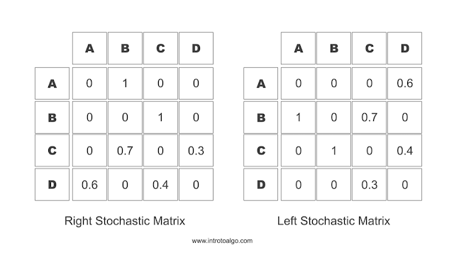

A stochastic model is one that depends on a random process. A Markov process, named after Andrey Markov, is a stochastic process that satisfies the Markov property — also known as "memorylessness": the next state depends only on the present state, not on any history before it.
A Markov chain is a Markov process with a finite or countable state space. The transitions between states each carry a probability, and the full set of these probabilities is captured in a transition matrix.
Applications
Markov chains appear across many real-world domains:
- Cruise control systems
- Ant colony optimization
- Share price movement analysis
- Natural language modeling (n-gram language models are Markov chains)
Transition Matrix (Stochastic Matrix)
A stochastic matrix (or transition matrix) defines the transitions in a Markov chain. Each entry is a non-negative real number representing the probability of moving from one state to another.
In a right stochastic matrix, each row represents the current state, and the values in that row are the probabilities of transitioning to each possible next state. The row values sum to 1.
In a left stochastic matrix, columns represent the current state and the column values sum to 1. These matrices go by many names: probability matrix, transition matrix, Markov matrix, or substitution matrix.

Fig. 3 — Markov transition matrixImplementation
Code for modeling the Markov process described in Fig. 2:
Back to Blog